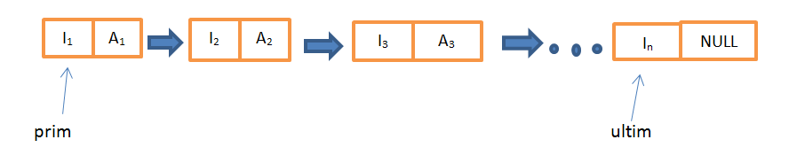

O listă simplu înlănţuită este o structură de date ce utilizează alocarea dinamică a memoriei. Un element al listei se numeşte nod. Fiecare nod al unei liste conţine un câmp care are rolul de a indica adresa următorului element din listă.
Memoria dinamică (heap) este o zonă a memoriei interne alocate programului în care adresele solicitate în program sunt folosite temporar și apoi dealocate .
1.Declararea;
2.Inițializarea ;
3.Adăugarea unu nod;
4.Ștergerea unui nod ;
5.Inserarea unui nod;
6.Parcurgerea pentru prelucrare.
Observație: Este suficient să cunoaștem adresa primului nod din listă. Uneori este util să păstrăm și adresa ultimului nod. 
Orice listă liniară poate fi accesată ca:
a)O stivă de date (liste LIFO)
b)O coadă de date (liste FIFO)
Listele dublu inlantuite sunt structuri de date dinamice. Ele au aceleasi caracteristici de baza ca si listele simplu inlantuite. Diferenta fata de acestea consta in faptul ca, pentru fiecare nod, se retine si adresa elementului anterior, ceea ce permite traversarea listei in ambele directii.
1.Declararea;
2.Inițializarea ;
3.Adăugarea unu nod;
4.Ștergerea unui nod ;
5.Inserarea unui nod;
6.Parcurgerea pentru prelucrare.